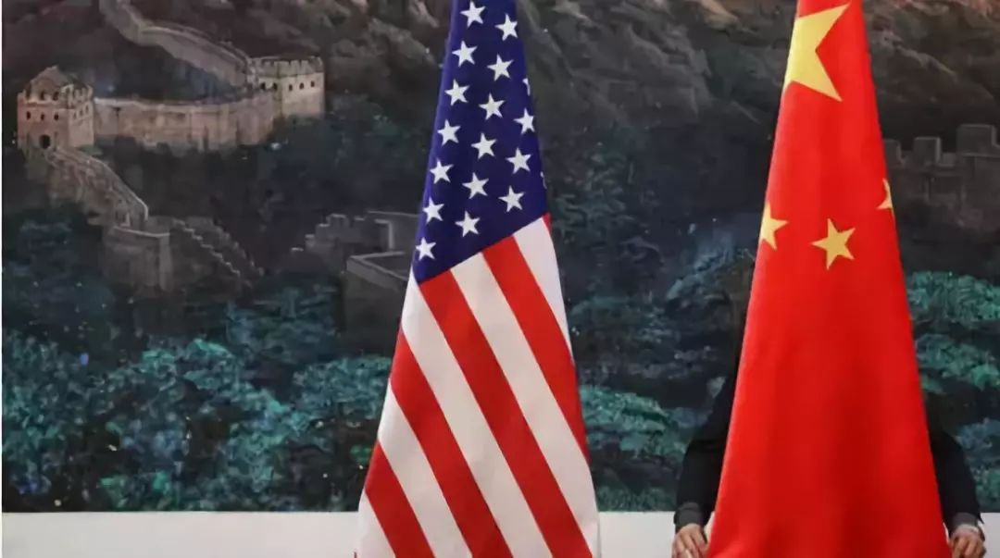

收录于合集

简 介
【作者简介】 Yuen Foong Khong ， 牛津大学纳菲尔德学院国际关系教授，教授研究员
【文章来源】 International Security , Vol. 38, No. 3 (Winter 2013/14), pp. 153–175, doi:10.1162/ISEC_a_00147
【编译】 李逸成
【校对】 高嘉琳 庞林立
关键词
**中美关系；世界秩序；中国崛起； **
**
**

正文
弗里德伯格指出，“中国保持现在的路径, 如果中国在不成为自由民主国家的情况下变得更加富裕和强大，那么目前与美国之间的温和竞争可能会发展成更加开放和危险的局面。一个富裕和强大的中国,弗里德伯格称,想要取代美国成为主要力量在亚洲。怀特认为：超越美国是中国的长期战略目标;对他来说，除非双方改变路线，否则不能排除战争的可能性。弗里德伯格和怀特都将在阎学通的著作中证实他们关于中国霸权野心的论点。阎学通被弗里德伯格称为中国的保守派领袖，也被一些美国人称为中国的弗里德伯格，他从中国古代思想家那里寻求灵感，指导当代中国的权力行使。阎建议他的博士生们审视“一个霸权与另一个霸权”的重新定位，他明确表示要从先秦思想家和战略家那里吸取教训，“完成中国崛起的伟大任务”。因此，首要地位、霸权或领导权是当今亚洲国际政治游戏的名称。三位作者都认为，这场斗争已经在继续。美中战略竞争是否会变得更加激烈？或者它能被驯服并引导到更合作的渠道？美国的反应应该是什么？霸权过渡战争是不可避免的吗？
权力的存在和发展的分配
亚洲现有的权力分配或均势如何？ 这个简单的问题有相互矛盾的答案。欢迎巴拉克•奥巴马(Barack Obama)政府重返亚洲战略的亚洲人将其描述为一种恢复该地区权力平衡的尝试，这意味着，在美国发动全球反恐战争的10年里，这种平衡向有利于中国的方向转移。就连弗里德伯格在这个问题上偶尔也会含糊不清，比如他形容美国的政策是维持亚洲的力量平衡，继续有利于美国及其地区盟友的利益。他写道,“美国及其盟国的目标是通过恢复因中国不断发展军力而破坏的平衡来加强威慑。然而，弗里德伯格在书的其他地方也明确承认，现有的“权力平衡”有利于美国(也就是说，美国的权力平衡有利于美国。)即存在权力的不平衡。他担心中国的意图取代美国成为“在东亚的主导权力”。
阎学通同意，亚洲的力量平衡在很大程度上仍然对美国有利。作为中国“综合国力”最重要的分析人士之一，他认为“(中国的)实力不仅低于美国的整体实力，而且在军事、政治和经济实力的各个方面都是如此。”这也是斯蒂芬·布鲁克斯、约翰·米尔斯海默、约瑟夫·奈、斯蒂芬·沃尔特和威廉·沃尔弗斯等美国国际关系学者的主流观点。
弗里德伯格(和怀特)与主流的不同之处在于，他们分析了权力分配的演变或转移。它们超越了一般的平衡，关注中国在发展针对美国的反进入或地区封锁能力方面取得的进展。弗里德伯格对这些能力对美国的战略影响进行了深入的分析。中国和美国所拥有的力量并不重要，重要的是他们能在何时何地利用这些力量。弗里德伯格和怀特的分析底线是中国越来越有能力威胁和实施海上封锁战略，这使得美国很难像过去那样在亚洲投射其海空军力量。
弗里德伯格和怀特都在讨论美国美国军方对这些反介入挑战的反应，即空海作战概念，寻求在所有领域强化美国空军和海军力量，以“破坏、打击和击败对手的反介入和区域封锁能力”。怀特怀疑这一概念是否会让美国重新夺回西太平洋司令部，因为要在严重的危机中做到这一点，美国将不得不对中国广泛的武装力量进行大规模打击，这实际上是对中国发动了全面战争。为了维持美国在海上和海底的霸权地位，冒这样的战争风险值得吗？怀特不这么认为，尽管他可能低估了为(传统)威慑目的部署这一概念的效用。
中国的崛起和抱负
弗里德伯格、怀特和阎学通都认为，中国的经济增长和不断增强的军事影响力使中国成为美国霸权的主要挑战者。在不同程度上，他们看到竞争或战略竞争已经开始。弗里德伯格对中国自上世纪70年代末以来的外交政策进行了最详尽的分析，其中“韬光养晦”和“不战而胜”两章尤其具有启发性。弗里德伯格对学术期刊、智库报告等公开的中国资源进行了调查，并以他对中国行为的观察为依据，以“避免对抗”、“建设综合国力”、“全面推进”三个公理总结了中国自上世纪80年代以来的战略。正如他所说，他只是从邓小平对同事们的著名忠告中“略微推断”，“隐藏我们的能力，等待时机”。
中国的长期抱负是什么？弗里德伯格认为，“中国当前的统治者似乎想要，他们的继任者几乎肯定也想看到他们的国家成为东亚乃至整个亚洲的主导或超级大国”。弗里德伯格担心的是，美国尚未直面这一巨大挑战，这也是他这本书的核心论点。他的书可以看作是对美国的一次明确的呼吁，鼓吹调集资源和制定必要的政策以防止中国在亚洲取代美国的紧迫性和必要性。怀特认为，在条件允许的情况下，中国将寻求霸权，但他认为，这些条件排除了中国的霸权，因为它将受到包括澳大利亚、印度和日本在内的亚洲许多国家的抵制。怀特认为，中国意识到了这一点，将接受在该地区与美国平等的“足够好”的解决方案，亚洲大多数国家都能接受这种情况。
阎学通会同意弗里德伯格和怀特的观点。他代表了一种将中国霸权视为可能和可取的中国思维。阎学通是肯尼思•华尔兹在伯克利教育的学生，阎学通对中国国际关系学派的可能性和可取性持怀疑态度。在中国的国际关系学派中，中国处理国际关系的方式所特有的一些元素被赋予了特权，并被用来构建(中国的)国际关系理论。他喜欢普遍的和科学的理论，他完全熟悉权力转移理论的版本，弗里德伯格和怀特的作品。与后者一样，阎预计中国将赶上美国，并在条件允许的情况下超越美国，在国际社会中占据极重要的地位。对三位作者来说，潜在的动力来自修昔底德对雅典崛起的观察，以及雅典崛起在斯巴达引发的恐惧，以及这种恐惧如何让战争不可避免。罗伯特·吉尔平对修昔底德动态的总结与三位作者产生了共鸣:一场霸权战争的结束是另一个增长、扩张和最终衰落周期的开始。经济增长不平衡的规律继续对权力进行再分配，从而削弱了由弹性竞争所确立的地位。不平衡取代了平衡，世界走向了霸权主义。人类要么毁灭自己，要么学会建立和平变革的有效机制。
弗里德伯格、怀特和严都认为，“不平衡的增长”是对中国有利的权力再分配，尽管中国要在主要权力方面赶上美国还需要一段时间。
亚洲的经济、政治和战略联盟
如果中国发展不对称的军事战略使美国更难保持对西太平洋司令部的无可争议的指挥，那么亚洲的新经济将给美国带来更大的战略挑战。随着中国取代美国成为几乎所有亚洲国家的头号贸易伙伴，后者可能会感受到强大的压力。美国作为亚洲的天然领导者的角色不能再被视为理所当然。这种对经济与战略结盟之间联系的强调，或许是怀特对这场辩论最重要的贡献。怀特提出了一个经常被美国战略家忽略的维度：怀特认为，国家权力有许多表现……但历史表明，它只有一个根本来源，那就是纯粹的经济规模。由此可见，中国的经济增长直接提高了其政治和外交的影响力。中国经济的开放意味着，无论是亚洲还是其他国家，中国都将成为它们最重要的经济伙伴，与中国不断增长的贸易(或来自中国的援助)对它们的未来至关重要。这使得许多国家对中国的利益十分敏感。怀特以他的祖国澳大利亚为例:中国不仅是澳大利亚目前最大的贸易伙伴;它也被视为未来增长的火车头。言外之意？它使澳大利亚在中国的经济成功中获得巨大利益，并与北京保持良好关系。怀特的结论是，这样一来，堪培拉就像许多其他国家的首都一样，知道要保护中国的巨大贸易利益，中国的关键关切必须得到尊重。
当怀特把“那么多其他国家的首都”比作堪培拉时，他不仅是在以学者的身份写作，而且是在传达他对亚洲政治经济脉搏的衡量，这是基于他与该地区政策制定者和分析师的广泛接触。因此，澳大利亚的情况可能比亚洲大多数国家更真实。后者的富裕程度不及澳大利亚，如果中国要成为它们的主要经济援助国，它们还将看到“对中国利益敏感”的战略之光。
这不是国际关系理论家处理经济相互依赖的传统方式。通常的辩论是关于贸易和经济一体化的安抚作用是否足以压倒大国的政治抱负和需要。应用于美中关系，问题是它们的经济联系是否足够大，足以抵御政治军事欺诈。弗里德伯格对美国的态度美中互动融合了这种经济动力:美国把自己置于一种新的、模糊的形势中，尽管它的政府具有压制性，[中国]……是美国最重要的商业伙伴之一。怀特并没有以这种方式阐述这个问题，但他同样认识到经济相互依赖的潜在安抚作用。然而，在分析中，他和弗里德伯格都认为，至少对大国来说，战略和政治野心超过了经济相互依赖的影响。
关于经济相互依赖对美国的影响的辩论的不确定性中国与美国的互动让怀特将目光转向更“本土”的东西:中国与亚洲较弱国家日益增强的经济联系所带来的战略影响。怀特关于中国需要将中国的战略需要纳入他们的政治考量，如果他们想通过与中国这个最大贸易伙伴保持经济联系而繁荣起来，他的观点几乎可以说，对于这些大国来说，经济推动政治。尽管现实更为复杂，但怀特的洞见抓住了当代亚洲的政治经济脉搏，过去十年的经济发展让中国在经济和战略上占据了上风。
美国的选择
那么，美国有哪些选择呢？这个问题是怀特和弗里德伯格的著作关注的焦点。对于怀特来说，美国有三种选择来回应中国扩大影响力的要求。它可以抵御中国的挑战，并试图维持亚洲的现状。它可以退出在亚洲的主导地位，把亚洲留给中国。在亚洲也可以保持在一个新的基础上,让中国更大的作用,同时保持一个强大存在的。他的书的副标题宣称,怀特认为第三种选择,美国分享权力,对地区的和平与稳定是最好的。
和怀特一样，弗里德伯格拒绝将霸权拱手让给中国。然而，他也反对分享权力，因为他认为，美国之所以能够确保其在亚洲的利益盟友、市场、技术和资源的安全，是因为它的首要地位或优势。他的观点与美国长期(两党)战略思维传统相一致:历届政府都强调，美国的重大利益在于防止一个敌对的霸权国家控制世界上任何一个主要地区。对弗里德伯格来说，一个不友好的亚洲霸主构成了威胁，它可能会利用该地区的财富和军事能力，把它们作为一个安全的基地，从那里挑战美国的利益，甚至可能攻击美国自己。
然而，怀特的中心信息是，对美国来说，主导地位不再是一个可行或明智的选择。相反，它唯一的选择是在新的基础上继续留在亚洲。(比如，与中国分享权力、通融中国)。这是避免或缓和战略竞争的最佳选择。怀特和弗里德伯格的不同之处在于，怀特希望美国能够通融，分享权力。但弗里德伯格拒绝接受这一建议。弗里德伯格倾向于美国保持其主导地位，主要是因为对他和其他许多不仅在美国而且在亚洲的人来说，美国的霸权维护了地区和平与稳定。
然而，怀特关于权力分享的论点并没有本书其余部分那么有说服力。他回到了一种制度安排，一种以维也纳会议为榜样的权力协调，作为一种评估中美两国野心的方式。尽管这次大会在引领欧洲百年和平方面取得了令人瞩目的成就，但它似乎与当今亚洲的权力和政治现实脱节。在权力分配方面，亚洲的局势是一个大国美国已经取得了主导地位。霸权国家为什么要放弃权力？在这里，米尔斯海默和其他人认为，霸权只有在被迫的情况下才会放弃权力，很可能是通过霸权战争。在政治方面，怀特提出的由美国、中国、日本和印度(尽管对俄罗斯不屑一顾)组成四国联盟的建议，将很难得到中国的支持:事实将证明，对三个民主国家联合起来反对它的恐惧是压倒一切的。引入日本和印度会给人一种增强而不是放弃美国实力的印象
最后，这个一致的观点与怀特的论点逻辑和主旨格格不入。他的书大部分是关于美国和中国的。印度和日本只出现在权力分享的讨论中。鉴于中国和日本之间的敌意，以及印度和中国之间的不信任，一些分析为什么这些障碍不排除美国中印合作是必要的。权力分享的安排似乎更符合怀特的论点，那就是中美两国集团或G-2。如果权力斗争是在中美之间进行的，最自然的解决方案必须是双方照顾彼此的核心战略关切，而不是引入其他可能使局势复杂化的国家。
阎学通比大多数人更清楚地意识到，在所有传统的实力衡量标准上，中国与美国的差距有多大。尽管如此，他的观点是，中国需要开始为取代美国成为霸主的那一天做准备。
底线
亚洲现有的权力分配仍然对美国有利。在军事方面,然而,尽管总体疲软(相对于美国),中国采用不对称策略开始蚕食美国军事优势。在经济方面,中国将取代美国成为世界上最大的经济体,基于购买力平价计算的。此外，与所有大国一样，中国渴望并正在努力成为地区霸主。这是三位作者的共识。如果人们接受这是对战略背景的准确描述，那么和平变革的前景是什么？
阎学通会同意怀特和弗里德伯格的观点。与怀特一样，他认为和平变革是可能的，尤其是如果美国避开其优势政策，分享权力的话。和弗里德伯格一样，阎学通也不反对对美国施加压力美中对抗应该坚持美国的主导地位。对他来说，分享权力只是中国取代美国成为霸主的长期角力的一个跳板。他对先秦战略思想的考察使他得出这样一个结论:中国要想取得地区霸权，就必须建立一种为中国想要称霸的国家所接受的政治领导、政策创新和道德权威。这种对领导力、创造力、心甘情愿的追随者和人道权威的强调描绘了一条通向霸权的道路，这条道路是非强制性和非暴力的
结论
亚伦·弗里德伯格(Aaron Friedberg)和休·怀特(Hugh White)的研究假设是，美国和中国的时间都不多了。我认为时间对双方都有好处。中国领导人承认，中国目前没有能力取代美国成为亚洲霸主。虽然很难否认，近年来中国的行动更加果断，特别是在东中国海和南中国海的领土争端方面，但这些努力并不是为了取代美国。如果答案是肯定的，那么这一战略显然是不称职的，因为它为美国重返亚洲铺平了道路。中国要想取代美国，最好的办法是在未来四分之一个世纪里继续以每年6%到8%的速度增长。当中国领导人说他们必须继续专注于国内经济发展，而这又需要一个和平稳定的亚洲时，我的理解是，他们并不急于取代美国。阎学通似乎满足于从中国古代思想家那里汲取霸权治国之道的学习方法。邓小平关于隐藏实力、等待时机的格言依然适用。再经历20年的强劲经济增长，中国或许能够在亚洲乃至世界其他地区发挥美国在二战后发挥的作用。采用弗里德伯格所说的“事物计算倾向”的中国战略家应该担心，其他国家会促使中国过早地对一些问题采取行动，而随着时间的推移，这些问题可能会自行解决，对中国有利。虽然中国拥有规模(人口的四倍)和地理(亚洲永久居民)的优势，但美国还有许多其他优势，包括其绝对财富、民主政治、军事盟友(在全球拥有700多个基地)、软实力和创新文化。中国经济持续增长的假设正是如此。中国能否在未来20年保持高速增长？尽管中国经济已经做出了上世纪90年代崩溃或本世纪头十年硬着陆的预测，但中国政策制定者对未来面临的挑战非常清楚。
最后,如果美国中国大赛是一个长途的努力(如阎假设),其中一个是考虑几十年而不是几年,双方将有机会尝试政策能够削弱锋利的边缘的比赛,即使他们无法消除它。例如，美国的“重返东亚”战略，鼓励中国的一些人呼吁美国也要“重返西方”(也就是说，中国应该把重心转向亚洲)。这不仅是为了保障其能源需求，也是为了扩大其战略空间，使其经济和战略福祉不完全依赖于东亚的发展。美国的前景。双方在经济投资、能源、反恐、防扩散、地区稳定等领域有着共同利益，认为在这些领域的合作更好。这一点与基辛格的观点是一致的，即存在共同发展的空间，即两国在可能的情况下开展国内合作，并调整关系以尽量减少欺骗。竞争将不会消失，而是将更多地表现在经济和政治方面，而不是军事方面。
基辛格对国内当务之急的强调是中肯而有先见之明的。它可以解读为哀叹和警告美国同胞的危险美国国际地位的政治碧和障碍见证了预算封存2013年的春天,政府关闭的2013年10月来描述美国政府。世界上最伟大的民主国家难以就其国内当务之急达成一致。美国政府关门迫使奥巴马总统取消了前往印度尼西亚巴厘岛参加东亚峰会的行程。目前正值美国重返亚洲的关键时刻。他的缺席被认为是战略重心转移的一个挫折。这也使得美国很难在TPP上施加一些压力，或者让它的亚洲伙伴对TPP的条款放心。国际和地区媒体也迅速地把中国描绘成抢先美国一步。基辛格关于国内当务之急的观点中暗含的比较国当然是中国。中国领导层似乎团结一致，追求持续的经济发展，部分原因是他们的政治生存和合法依赖。全球市场担心“硬着陆”，但迄今为止对中国经济的反弹感到惊喜。对与中国共同发展感兴趣的亚洲国家放心了。因此，有关时间的争论并不在于它将如何推动中美两国的利益趋于一致;这种情况可能会发生，也可能不会发生。关键是哪一方能够更好地调动国内政治、经济、技术和文化资源，实施有利于中国成为或保持霸主地位的农业战略，使其领导地位与亚洲和世界其他地区相适应。
点击左下角“ 阅读原文 ”获取原文pdf版
声明
此文为国政学人微信公众平台外文编译系列文章之一，由国政学人编辑首发，不代表本平台观点。欢迎转发分享，转载请务必注明来源。如有问题，请联系guozhengxueren@163.com
更多阅读
国政学人 （ID：guozhengxueren)
为方便学人及时阅读高质量文章
别忘把国政学人设置 星标 哦~